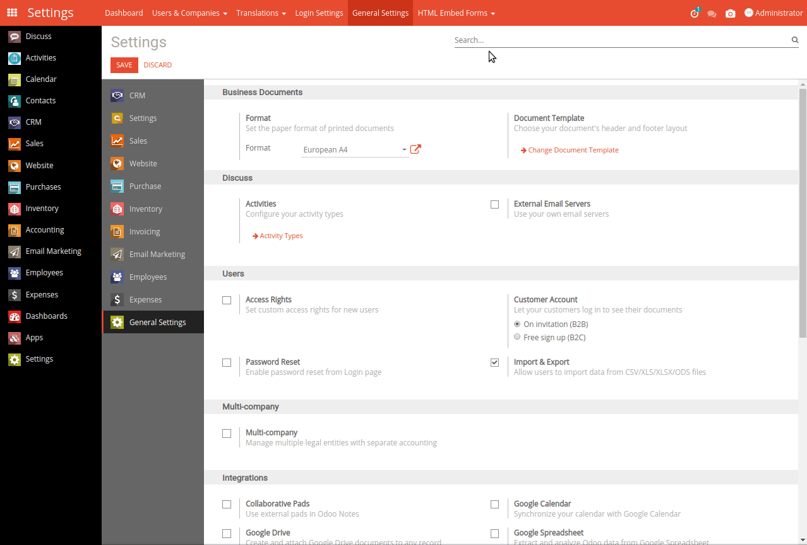

<section class="oe_container">
    <div class="oe_row oe_spaced text-center">
        <h2 class="oe_slogan" style="color:#875A7B;">Screenshot of Current Screen / Page</h2>
        <h3 class="oe_slogan">Odoo 12</h3>
        <h3 class="oe_slogan">Tested in Odoo CE and also with Community backend Theme. </h3>

        <h3 class="oe_slogan">
            This module purpose is user take screenshot of current page.
        </h3>

        <div class="oe_demo oe_screenshot">
            
        </div>
    </div>
</section>